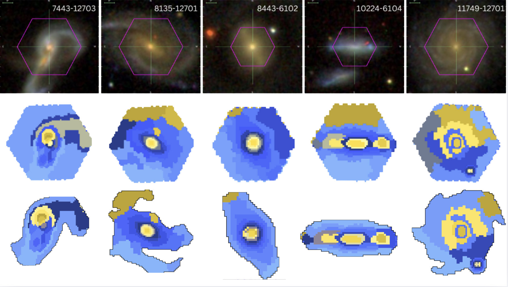
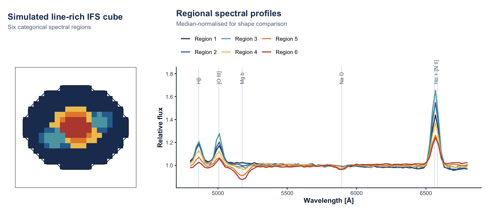

Capivara performs spectral segmentation of integral-field spectroscopy (IFS) cubes, assigning eligible spaxels to regions with coherent spectra and returning flux-preserving regional spectra.
Peer-reviewed paper · arXiv:2410.21962

The workflow separates four objects that should not be conflated:
- IFS cube
- spatial support
- spectral regions
- regional spectra
Installation
install.packages("remotes")
remotes::install_github("RafaelSdeSouza/capivara", upgrade = "never")
library(capivara)torch is optional. The exact first-run workflow below uses the declared base R and package dependencies and does not require a GPU, Python, a survey download, or a local FITS file.
Quick start
This example creates a small synthetic IFS cube with a fixed seed. Its four input profiles contain recognisable Hβ, [O III], Mg b, Na D, Hα, and [N II] features and are mixed across a toy bulge, disc, nucleus, and two star-forming knots. This is an API demonstration, not scientific evidence.
library(capivara)
set.seed(241021962)
n_row <- 24L
n_col <- 24L
n_wave <- 96L
wavelength <- seq(4800, 6800, length.out = n_wave)
gaussian <- function(centre, width) {
exp(-0.5 * ((wavelength - centre) / width)^2)
}
row_id <- row(matrix(0, n_row, n_col))
col_id <- col(matrix(0, n_row, n_col))
x <- (col_id - 12.5) / 10
y <- (row_id - 12.5) / 8
radius <- sqrt(x^2 + y^2)
support <- radius <= 1
profiles <- rbind(
bulge = 1.12 + 0.00005 * (wavelength - 5800) -
0.18 * gaussian(5175, 38) - 0.07 * gaussian(5892, 28) +
0.05 * gaussian(6563, 24),
disc = 0.86 - 0.00003 * (wavelength - 5800) +
0.13 * gaussian(4861, 23) + 0.12 * gaussian(5007, 24) +
0.34 * gaussian(6563, 26) + 0.10 * gaussian(6583, 18),
knot = 0.72 + 0.28 * gaussian(4861, 21) +
0.46 * gaussian(5007, 22) + 0.85 * gaussian(6563, 23) +
0.18 * gaussian(6583, 16),
nucleus = 0.98 + 0.15 * gaussian(4861, 22) +
0.42 * gaussian(5007, 23) + 0.48 * gaussian(6563, 24) +
0.42 * gaussian(6583, 17)
)
w_bulge <- exp(-0.5 * (radius / 0.25)^2)
w_nucleus <- exp(-0.5 * (radius / 0.10)^2)
w_knots <-
exp(-((x - 0.48)^2 + (y + 0.16)^2) / (2 * 0.12^2)) +
exp(-((x + 0.40)^2 + (y - 0.28)^2) / (2 * 0.14^2))
w_disc <- 1 - w_bulge
w_disc[w_disc < 0.12] <- 0.12
cube <- array(NA_real_, dim = c(n_row, n_col, n_wave))
for (i in seq_len(n_row)) {
for (j in seq_len(n_col)) {
if (support[i, j]) {
weights <- c(w_bulge[i, j], w_disc[i, j],
w_knots[i, j], w_nucleus[i, j])
weights <- weights / sum(weights)
brightness <- 0.45 + 0.9 * exp(-1.7 * radius[i, j]) +
0.35 * w_knots[i, j]
profile <- drop(weights %*% profiles)
cube[i, j, ] <- brightness * profile + rnorm(n_wave, 0, 0.008)
}
}
}
seg <- segment(
input = list(imDat = cube),
Ncomp = 6,
use_starlet_mask = FALSE
)
spectra <- summarize_cluster_spectra(seg)
regional_products <- data.frame(
region = spectra$cluster_ids,
n_spaxels = unname(spectra$n_spaxels),
summed_flux = round(rowSums(spectra$sum_spectra), 1)
)
knitr::kable(regional_products)| region | n_spaxels | summed_flux |
|---|---|---|
| 1 | 167 | 9835.3 |
| 2 | 14 | 1022.2 |
| 3 | 18 | 1592.4 |
| 4 | 20 | 1620.3 |
| 5 | 9 | 819.5 |
| 6 | 20 | 2225.6 |
The integer values are categorical region identifiers. NA in seg$cluster_map means that the spaxel was outside the eligible support. The table reports the number of assigned spaxels and the wavelength-integrated sum of each regional spectrum.
plot_cluster(seg)
Use spectra$sum_spectra for flux-preserving regional science products. Means and medians are diagnostic summaries unless a downstream analysis explicitly requires them. The Getting started guide executes this workflow and connects each returned object to the real-data example above.
Core API
The Reference index groups the documented public API by scientific role. Kinematic analysis and an explicit bisymmetric model are documented separately so bar-specific assumptions are not inherited by the general spectral-segmentation workflow.
About
Capivara is an R package for spectral segmentation and post-processing of IFS data cubes. The canonical citation is generated from inst/CITATION; cite the published MNRAS article when using the package in scientific work.